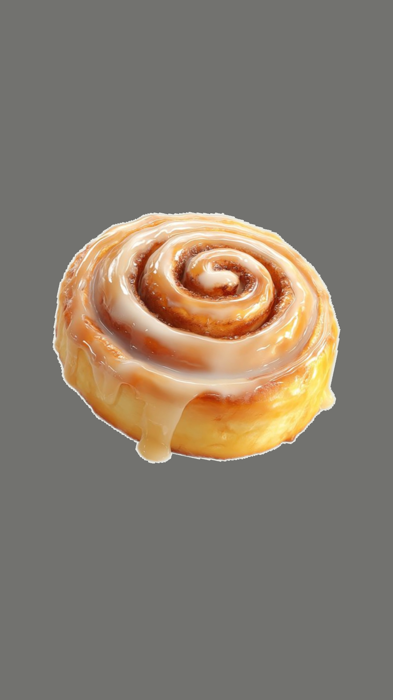

Home
Cinnamon Roll

Description
A delicious cinnamon roll made with a flaky, buttery dough and a sweet cinnamon-sugar filling.
Ingredients
- 1 cup warm milk
- 2 1/4 teaspoons active dry yeast
- 1/2 cup sugar
- 1 egg
- 1/2 cup butter, melted
- 3 cups all-purpose flour
- 1 teaspoon salt
- 1/2 cup brown sugar
- 2 tablespoons cinnamon
Steps
- In a small bowl, dissolve yeast in warm milk and let it sit for 5 minutes.
- In a large bowl, combine sugar, egg, melted butter, and salt. Add the yeast mixture and mix well.
- Gradually add flour and knead the dough until smooth and elastic. Cover and let it rise for 1 hour.
- Roll out the dough into a rectangle. Spread the brown sugar and cinnamon mixture over the dough.
- Roll up the dough tightly and cut into slices. Place the slices in a greased baking dish.
- Cover and let them rise for another 30 minutes. Preheat the oven to 350°F (175°C).
- Bake for 25-30 minutes or until golden brown. Let them cool before serving.